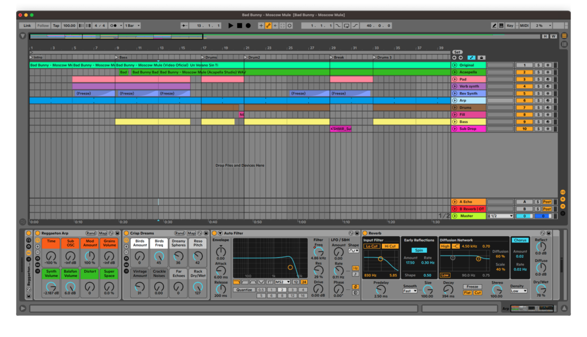

DIGITALES (1990–2010)
Este período marca la expansión global de la música electrónica como cultura de masas, ya no solo como experimentación o nicho underground. La electrónica se vuelve música de clubes y raves. Industria global.
Lenguaje pop y mainstream.
Cultura de Clubes, Raves y Música Popular
Se consolida la cultura rave y clubbing en Reino Unido, Alemania, Estados Unidos con sus fiestas ilegales, warehouses, conciertos en fábricas abandonadas.
Los estilos más escuchados son: techno, house, trance, jungle, drum & bass.
La computadora se vuelve el centro del estudio. Nacen los DAWs modernos. Se abarata el acceso a producir música. Es el momento en que la música electrónica pasa de los laboratorios y estudios analógicos a los home studios digitales.
La transición de lo analógico a lo digital permitió el uso masivo de samplers digitales, cajas de ritmo y el standard MIDI como método universal para la producción.
A fines de la década del 90 y con la popularización de la computadora surge una revolución clave: Aparición de VSTs (Virtual Studio Technology) en 1996, sintetizadores y efectos virtuales, producción completamente digital. Los softwares que aparecen, marcan tendencia y se siguen usando hasta nuestros días son: Ableton Live, Reason, FL Studio.
La música electrónica se vuelve en fenómeno global, cada vez más popular y transversal a distintas clases sociales. El o la dj tienen en sus manos las herramientas no solo para combinar sonidos y música en una cabina sino para producir sus propios tracks o mezclas.
Techno y House
-
K-Hand (Kelli Hand).
Pionera del techno y house de Detroit. Llamada la "First Lady" del techno de la ciudad.
-
Monika Kruse.
Figura clave de la escena rave alemana en los 90. Fundadora del sello Terminal M.
House y Cultura Club
-
DJ Heather.
Figura central del deep house de Chicago en los 90 y 2000.
-
Smokin' Jo.
DJ británica. Primera mujer en ganar el premio DJ of the Year de DJ Magazine.
Drum & bass y Escenas Queer
-
Jordana LeSesne.
Pionera trans del drum & bass en los años 90. Fusionó ciencia ficción, política y música de club.

Ableton Live